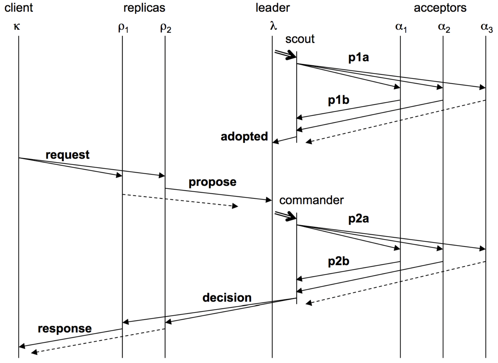
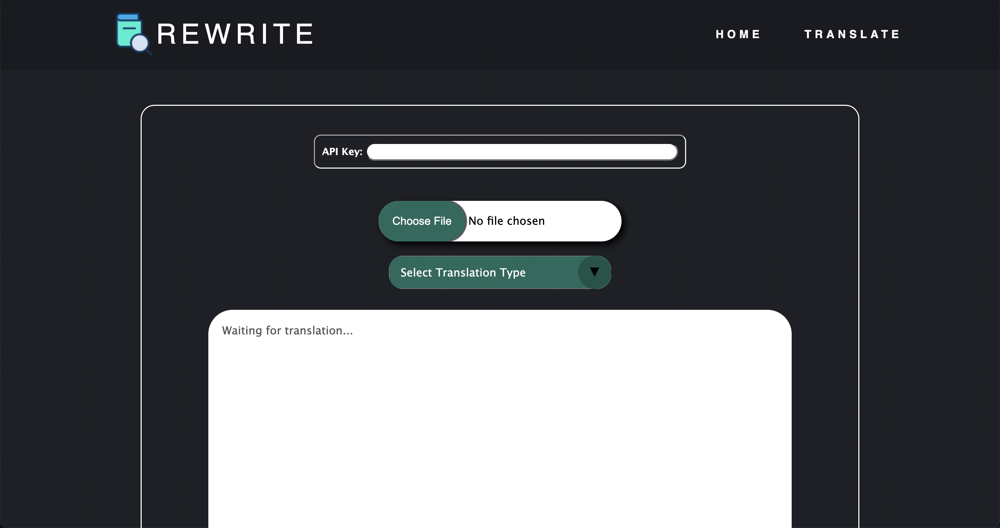

Distributed System: Java Non-Relational Database Similar to Amazon’s DynamoDB or Google’s Spanner
The quarter-long goal of this project was to build a sharded, linearizable, scalable, fault-tolerant, highly available key-value store, with dynamic load balancing and atomic multi-key transactions.
The project was primarily written in Java, beginning with the creation of a personalized key-value store. Fault tolerance was attempted first with a primary/backup system, wherein two servers act together to guarantee no state is lost or altered from the client's perspective. The client talks to the primary, who executes after the backup has processed the request as well. The servers interact with a ViewServer who tells them who is primary and who is backup at any given time. Linearizability was guaranteed through "exactly once" semantics, where clients would retry requests on timers and servers use cached results for already executed requests.
To guarantee linearizability of commands in the event that the ViewServer goes down, a Paxos protocol was then implemented. The version implemented in class was adapted from this paper. In general, clients send requests to all replicas, of which only the leader of the Paxos group processes, then broadcasting the request to all other replicas for consensus. Consensus is reached by way of replicas voting for which client's command should be placed into their log of commands. Once consensus on the order of commands has been reached, the leader processes the requests by moving through its log and executing consecutive slots that have been chosen by the replicas and replies to the client after each execution. The replicas will do the same, all storing commands in their own log which is updated by the leader through heartbeat messages. Servers communicate through a series of messages that each contain their own functionality, and timers are used to solve network latency issues, including message delays, reorders, and drops. "Exactly once" semantics and linearizable consistency are still guaranteed. In the event that a leader is not currently active or network latency issues have caused partitioning on the network such that the replicas are unaware of a current leader, the replicas will undergo an election process to become the new leader. Leaders are elected with a majority of votes from the total number of servers in the system, and partitions are resolved by prioritizing higher ballot numbers, which monotonically increase throughout the system's life.
Linearizability as well as fault tolerance for network latency issues including message delays, reorders, and drops are primarily solved using the Paxos protocol. Scalability is then addressed by creating a transactional key-value store that can handle sets of client requests, while the keys are sharded across the servers using consistent virtual hashing. A ShardMaster manages a sequence of numbered configurations describing a set of replica groups and an assignment of shards. Each replica group runs the previously implemented Paxos protocol to guarantee linearizability of commands. To help guarantee high availability, the ShardMaster will dynamically load balance the store, determining if a new configuration is necessary and redistributing shards to new groups as they come and go or as keys become more popular. Lastly, transactions are processed using a two-phase commit strategy so that commands can be executed across shard groups. When a transaction is received, a coordinator uses prepare and commit messages to ask replicas if they can commit to this transaction and then execute its set of commands respectively. This allows the distributed system to handle increasingly high numbers of client requests. The result is a scalable, highly available, linearizable, fault-tolerant database.
The code for this project was written for the class CSE 452: Distributed Systems at UW. Please reach out to me via email at aldenhinden@gmail.com or aghs@cs.washington.edu for code. I would be happy to discuss this project further as this is a very succinct description, and it was one of my personal favorites.
ReWrite: ChatGPT Integrated PDF Summarizer
Full stack development on a team integrating the ChatGPT API into an Angular CLI website, using prompt engineering and JavaScript web scraping to return summaries of uploaded PDFs. Experience configuring a virtual private server to fully deploy the website using Vultr's high performance cloud servers. Continuous integration and testing experience.
The primary intended use case for this product was to provide users with the ability to summarize complex research papers easily. The user visits our website, navigates to the "translate" page, and clicks "upload", providing a PDF which they wish to have summarized (note: they must also provide their own API key from OpenAI in the class version). They have the option to choose a "quick" translation or a "deep" translation, which will make calls to the ChatGPT API either in parallel or sequentially, respectively.
The website front end was developed using the Angular CLI framework. Uploaded PDFs are scraped using the pdf-parse package from Node.js, and the output string is thereafter sent to simplification. After a prompt describing to ChatGPT how to summarize is made, the text is broken up into chunks before being sent to ChatGPT through API calls (if "quick" mode is enabled, these calls are made in parallel). ChatGPT processes the text chunk-by-chunk before sending the result back to the front end. The front end and back end communicate through their respective servers. Continuous integration is set up through the Node.js by GitHub Actions using Mocha tests and the Chai testing framework. The website was deployed using Vultr to create both a development and production version of the website.
The code for this project was written for the class CSE 403: Software Engineering at UW. Please reach out to me via email at aldenhinden@gmail.com or aghs@cs.washington.edu for code as I would be happy to discuss this project further.
Campus Map: Pathfinding Resource for the UW Campus
Full implementation of Dijkstra’s algorithm to find the shortest path between buildings on UW campus using a personalized, generic graph data structure in Java. Front-end UI integration with HTML and ReactJS. Practice with simple HTTP servers in Java.

From the user's perspective, the front end displays a map of the UW campus alongside two drop down menus displaying lists of buildings. The user can select a starting point and an ending point, and the UI will display the shortest path between those two locations using a purple line.
The buildings are read from a CSV file into the generic graph data structure. The Graph<N, E> is a
wrapper around a HashMap<Node<N>, HashSet<Edge<E, N>>> and supports the following
functions: addNode(N label), addEdge(E label, N source, N dest), getNodeList(), getEdgeSet(N parent),
getParents(N node), getChildren(N node), hasNode(Object o), hasEdge(E label, N source, N dest). Once the
buildings are read from CSV file, a graph is constructed mapping building names to their Double coordinates. That
graph is then sent to the following function that computes the shortest path between two points using Dijkstra's
algorithm:
/**
* Finds the shortest path between two given nodes on a given graph.
* @param graph the graph to search through
* @param startNode the starting node
* @param destNode the destination node
* @param <T> a generic type parameter that represents the graph node type
* @return the shortest Path between startNode and destNode or null if no path exists
*/
public static <T> Path<T> findShortestPath(Graph<T, Double> graph, T startNode, T destNode) {
PriorityQueue<Path<T>> active = new PriorityQueue<>(new PathSorter<>());
Set<T> finished = new HashSet<>();
Path<T> zeroCostPath = new Path<>(startNode);
active.add(zeroCostPath);
while (!active.isEmpty()) {
Path<T> minPath = active.remove();
T minDest = minPath.getEnd();
if (minDest.equals(destNode)) {
return minPath;
}
if (finished.contains(minDest)) {
continue;
}
for (Graph.Edge<Double, T> edge : graph.getEdgeSet(minDest)) {
if (!finished.contains(edge.dest.label)) {
Path<T> newPath = minPath.extend(edge.dest.label, edge.label);
active.add(newPath);
}
}
finished.add(minDest);
}
return null;
}
The Path object is generated by grabbing user input through a simple Spark server, which takes input from the user for
"start" and "end" locations, utilizing the findShortestPath() function to return the shortest path to
the UI to be drawn on the map:
// SERVER: find a path between two buildings
Spark.get("/findPath", (request, response) -> {
String start = request.queryParams("start");
String end = request.queryParams("end");
Path<Point> path = campusMap.findShortestPath(start, end);
Gson gson = new Gson();
return gson.toJson(path);
});
The actual UI is constructed using ReactJS, Node.js, TypeScript, and HTML.
The code for this project was written for the class CSE 331: Software Design & Implementation at UW. Please reach out to me via email at aldenhinden@gmail.com or aghs@cs.washington.edu for code as I would be happy to discuss this project further.
PacMan Search: AI Driven Maze Pathfinding in Python
Optimizing maze pathfinding in Python with BFS, DFS, UCS, A* search, Alpha-Beta Pruning, and practice with evaluation functions. Further exploration into reinforcement learning with value iteration, Epsilon Greedy, Q-learning, and particle filtering.
Given a working PacMan game in Python, with each frame of the game representing a given "state", I was able to optimize PacMan's ability to reach a target position on a monster-less board. Beginning with Depth-First Search, PacMan would search a tree of possible next moves, and choose the most desirable one. Although accurate, DFS is quickly optimized with Breadth-First Search as an optimal DFS result would most likely be a random outlier given the nature of a maze. In turn, Uniform-Cost Search improves upon BFS by reducing the search space by taking into account the cost of the path, rather than exploring all states level-by-level in the search tree. Various heuristics such as Manhattan distance were then added to optimize PacMan's ability to reach its goal efficiently using A* search.
def aStarSearch(problem, heuristic=nullHeuristic):
"""Search the node that has the lowest combined cost and heuristic first."""
# frontier is priority queue sorted by g(n)+h(n),
# where g(n) = the cost from root to n,
# and h(n) = a heuristic approximation of the goal cost
# ((state, list of path directions to state, total cost of path), priority=g(n)+h(n))
frontier = util.PriorityQueue()
frontier.push((problem.getStartState(), [], 0), heuristic(problem.getStartState(), problem))
visited_nodes = set()
# loop through frontier queue
while not frontier.isEmpty():
# get current node tuple
cur_state, directions, path_cost = frontier.pop()
# CASE: cur_state == goal state
# return path to cur_state
if problem.isGoalState(cur_state):
return directions
# CASE: cur_state already visited
if cur_state in visited_nodes:
continue
# CASE: cur_state unvisited
# add children of cur_state to frontier queue to explore
for child_state, action_dir, step_cost in problem.getSuccessors(cur_state):
succ_path = directions + [action_dir]
# we add a priority of g(n)+h(n) to the child node to guide our search
aStarHeuristic = path_cost + step_cost + heuristic(child_state, problem)
frontier.push((child_state, succ_path, path_cost + step_cost), aStarHeuristic)
visited_nodes.add(cur_state)
# CASE: frontier fully explored -> therefore can't reach goal state
return None
In order to further reduce the search space on complex mazes, starting to include those with ghost adversaries, PacMan was programmed to use Alpha-Beta Pruning in order to more quickly decide which move would lead him towards success or certain death by discarding any verifiably suboptimal branches of the tree, thereby reducing the search space. I began experimenting with various evaluation functions in order to optimize PacMan's safe path through the treacherous maze towards success. The idea was to penalize moves on the search tree that brought PacMan closer to ghosts and reward it for those that ate food dots, necessitating a scoring system with the perfect balance between avoiding death and optimally eating all the dots.
Solving mazes is all too easy for AI PacMan when it can see a search tree, though. The next step was to throw it into the maze all by itself to learn the world on its own. The goal was complete reinforcement learning, and I started with Markov Decision Processes, programming PacMan to iteratively update the values of states based on the expected rewards and transition probabilities associated with the actions it can take in each state. Beginning with the Bellman equation, I ran value iteration in order to begin focusing PacMan on solely the Markovian present moment.
Roughly summarized, the process described by the equation is to sum all the probabilities of the options for actions at a certain state (T), multiplied by the action you’re thinking of taking (the expected reward along the way, R) plus the discounted value of being there if you were to move there. Similarly, I also ran policy iteration, where PacMan focuses on improving the policy itself (the strategy that specifies the action the agent should take in each state to maximize its expected cumulative reward) rather than simply the value function. Asynchronous value iteration as well as prioritized sweeping were also implemented.
Next up, Q-learning was implemented. In this version of reinforcement learning, PacMan ponders its MDP model to arrive at a complete policy before ever interacting with a real environment. When it does interact with the environment, it simply follows the precomputed policy. This contrasts value iteration, where PacMan does not actually learn from experience (not true reinforcement learning). PacMan was trained on hundreds of games, using an epsilon-greedy exploration strategy wherein it has to choose between exploiting the currently estimated best action (exploitation) and trying a new action that might yield a higher reward (exploration). Finally, PacMan could be placed into an unknown maze, without knowledge of the future, and due to its training and reinforcement learning, it understands how to act in its environment to most successfully solve the maze.
The code for this project was written for the class CSE 473: Artificial Intelligence at UW. Please reach out to me via email at aldenhinden@gmail.com or aghs@cs.washington.edu for code as I would be happy to discuss this project further.
Other projects...
- C/C++ File System Crawler, Indexer, and Search Engine: Created LinkedList and HashMap data structures in C to integrate with C++ index file to serve as back-end of a simple word-matching “mini Google”. Practice with C/C++ HTTP server implementation.
-
Java Worklists and Tries: A
Worklistis an abstract data type that contains items to be processed in some order. Implemented extensions of Worklists, including aListFIFOQueue(a linked list),ArrayStack, andCircularArrayFIFOQueue. ATrieis set or dictionary which maps "strings" to some type (think: more genericMap). Implemented extensions of Tries, includingHashTrieMapandHashTrieSet. Practice with the JUnit testing framework to test these data structures. -
uMessage: Wrote various data structures in Java to be the backing for an iMessage-like
messaging app. Data structures implemented include the following:
MinFourHeapComparable, an array based heap;MoveToFrontList, a linked list where new items are inserted at the front of the list and an existing item gets moved to the front whenever it is referenced;AVLTree, subclass ofBinarySearchTreethat does load balancing;ChainingHashTable, a generic separate-chaining hash table. Also implemented Heap Sort, Quick Sort, and TopK Sort sorting algorithms to be used with the data structures. - Census Map: Given a grid of census population data, implemented a query responder both sequentially and in parallel in Java with the purpose of providing the user with population data from any location in the US. Experience with Java's ForkJoin parallel framework.
- Android App: Created a simple, accessible app usable on any Android in Java. Experience with event handling; graphical layout, design, and widgets; undo; accessibility; and context awareness.